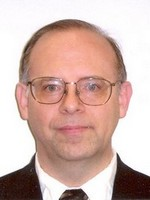

Keynote Speaker

Paul Black
National Institute of Standards and Technology
USA
Title: Counting Bugs is Harder Than You Think
Abstract:
The U.S. National Institute of Standards and Technology (NIST) researches
measurements, standards, and technology in areas from atomic clocks to quantum
computers to bullet-proof vests, from dental ceramics to robotics. It is a rare large
research laboratory, and offers many exciting work opportunities. SAMATE
(Software Assurance Metrics And Tool Evaluation) is a broad, inclusive project at
NIST with the goal of improving software assurance by developing materials,
specifications, and methods to test tools and techniques and measure their
effectiveness. As a bonus, the talk shares how to create a great project: pick a good
name, get a snappy logo, and set a broad scope so early success does not mean the
end of that good name and snappy logo.
The talk reviews some SAMATE sub-projects, such as web application security scanners, malware research protocol, voting systems, and the SAMATE Reference Dataset, a public repository of thousands of example programs with known weaknesses to evaluate tools. After reporting the progress of the fourth Static Analysis Tool Exposition (SATE), the talk explains critical research problems with bugs, flaws, or faults. For instance, what exactly is a bug? How many bugs are there if two sources call two sinks: 1, 2, or 4? If a numeric overflow leads to buffer overflow, which leads to command injection, what is the error? Where is a missing feature?